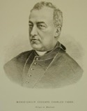

Beaubien-Perrault-Benington - Person Sheet
Beaubien-Perrault-Benington - Person Sheet

Birth28 Feb 1827, Montréal, Québec
Death30 Dec 1896, Montréal, Québec
Occupationprêtre, évêque
FatherEdouard Raymond Fabre (1799-1854)
MotherLuce Perrault (1811-1904)
Notes for Mgr. Edouard Charles Fabre
Premier archevêque de Montréal
Ne dans une famille bourgeoise et libérale, il devint un protégé de Mgr Bourget qu'il succéda comme évêque de Montréal avant de devenir le premier archevêque de cette ville. Après le séminaire de St- Hyacinthe, il passa un an avec son père a Paris, ou la vie mondaine lui déplut. A cause de l'influence de son père, il étudia la théologie sous la direction de Mgr Bourget, plutôt qu'au séminaire de St-Sulpice. Ordonné en 1850, il fut auxiliaire a Sorel, puis curé de Pointe-Claire. Il commence déjà a se détacher des idées libérales de son père: il critiqua, par exemple, le journal Le Pays fondé par son père comme "un véritable scandale pour ma paroisse".
Chanoine de la cathédrale en 1856. L.O. David le décrit comme "le prêtre a la mode", en grande demande pour les mariages mondains.
En 1873, Mgr Bourget nomme Fabre coadjuteur, avec droit de succession. Il fut consacre évêque de Gratianopolis par Mgr Taschereau, archevêque de Québec, en 1873. La nomination fut bien reçue à Montréal, mais moins bien vue à Québec, où on crut que ses tendances étaient trop ultramontaines. Il devint évêque de Montréal le 11 mai 1876, a la retraite de Mgr Bourget.
Par 1879, l'évêché de Montréal avait une lourde dette, que Mgr Fabre tenta de réduire en éliminant ou ralentissant plusieurs projets de construction et en augmentant diverses redevances.
Fabre était un adversaire du changement social. De tendance corporatiste, il s'opposait à la grève comme mécanisme permettant aux travailleurs de protéger leur situation. En 1882, il condamna une grève des cordonniers. Il déclara qu'appartenir aux Chevaliers du Travail était péché mortel. Il s'opposa aux spectacles, loteries, parcs d'amusement, pique-niques mixtes, danses, alcool, parties de traîneau et de raquette, pèlerinages mixtes et chorales mixtes, mais il favorisa les retraites.
Il appuya Mgr Labelle dans ses efforts de colonisation. Il essaya d'imposer des contrôles administratifs et fiscaux sur les prêtres du diocèse, mais ces mesures furent fortement opposées. Il augmenta son contrôle sur le port de l'habit clérical, interdit aux prêtres de porter la barbe, et interdit aux religieuses d'être seules avec un homme, même un prêtre.
Il réussit à améliorer les relations entre son diocèse et l'archidiocèse de Québec. Son pragmatisme le mena à abandonner l'ultramontanisme extrême de Mgr Bourget qui avait été une cause principale de conflit avec Mgr Taschereau. En 1880, il présida aux funérailles de Gonzalve Doutre, un libéral en vue et ancien président de l'Institut Canadien. En revanche, il refusa la permission aux libéraux de transférer en terre consacrée les restes du révolutionnaire Jean-Olivier Chénier.
Sensible à la modération des positions libérales, il chercha un accommodement accru avec les pouvoirs politiques. Il enjoignit les prêtres de ne pas accepter de postes politiques ou de prendre en chaire des positions politiques et il leur interdit de refuser les sacrements aux adversaires de l'église. Durant les élections de 1891, il publia, selon le conseil du Conservateur L.O.Taillon, une lettre pastorale soulignant les avantages pour les canadiens-français de la relation britannique, scandalisant les Libéraux qui prônaient la réciprocité avec les États-Unis.
Quelque soit le parti au pouvoir, Fabre appuya l'autorité de l'état. Il encouragea la vaccination contre la variole en 1885, contre beaucoup d'opposition du public. Il sous-estima l'importance politique de Louis Riel quand il nomma un chapelain des Mount Royal Rifles qui participèrent à l'expédition anti-Riel. Il eut aussi des ennuis avec la crise des écoles du Manitoba.
Il interdit aux catholiques de lire plusieurs journaux à tendance libérale, tels "Le Courier des Etats-Unis", publié a New York, la "Canada-Revue" de Montréal, et "L'Echo des Deux-Montagnes" de Ste- Scholastique.
Toujours soucieux de d'accommoder les désires de Rome, Mgr Fabre chercha à réduire ses différences avec Mgr Taschereau, suscitant par ce fait l'opposition des extrémistes ultramontains de son diocèse. Ce conflit ne fut nulle part plus évident que dans sa lutte pour une université autonome à Montréal. Mgr Bourget avait résigné son poste d'évêque quand Rome accepta en 1876 la requête de Mgr Taschereau pour une branche de l'université Laval à Montréal, et, en plus, financée par le diocèse de Montréal. Cette décision fut opposée non seulement par Mgr Bourget mais aussi par Mgr Laflèche de Trois Rivières, le clergé montréalais, les ultramontains, et la Montréal School of Medicine and Surgery, et son hôpital affilié, l'Hotel-Dieu. (cv Sir Wiliam Hales Hingston). Ayant publiquement accepté la décision de Rome, Mgr Fabre n'en continua pas moins de la faire renverser. En 1883, il proposa une nouvelle solution: l'élévation de Montréal au rang d'archevêché, ce qui lui permettrait d'opérer sa branche de Laval de façon presque autonome. Taschereau s'y opposa, mais retira son objection quand Léon XIII proposa de le nommer cardinal. Mgr Fabre devint donc le premier archevêque de Montréal le 8 juin 1886, et les évêchés de St-Hyacinthe et de Sherbrooke (sous Mgrs Moreau et Racine) devinrent parties de l'd'archevêché de Montréal. En février 1889, la branche à Montréal de l'université Laval devint largement autonome, la Montréal School of Medicine and Surgery en devint la faculté de médecine, et les jésuites reçurent un statut spécial.
Au cours d'un voyage à Rome en 1896, Mgr Fabre apprit qu'il était touché de cancer du foie. Il mourut le 30 décembre, et fut enterré dans la cathédrale St-Jacques, dont la construction avait été commencée par Mgr Bourget mais qu'il avait terminée. Cinq archevêques et 17 évêques y participèrent.
Les 20 ans durant lesquels il fut évêque constituèrent une période de pouvoir croissant pour l'église au Québec. Bien qu'il n'eut pas l'éminence de son prédécesseur, Mgr Bourget, ou de son successeur, Mgr Bruchési, la période de son mandat est essentielle à la compréhension de l'évolution de la société québécoise de la fin du 19ème siècle.
[Index toponymique des rues de Montréal] Les rues Fabre et St-Edouard ont été nommées en son honneur à Montréal. Et la ville de Fabreville?
Ne dans une famille bourgeoise et libérale, il devint un protégé de Mgr Bourget qu'il succéda comme évêque de Montréal avant de devenir le premier archevêque de cette ville. Après le séminaire de St- Hyacinthe, il passa un an avec son père a Paris, ou la vie mondaine lui déplut. A cause de l'influence de son père, il étudia la théologie sous la direction de Mgr Bourget, plutôt qu'au séminaire de St-Sulpice. Ordonné en 1850, il fut auxiliaire a Sorel, puis curé de Pointe-Claire. Il commence déjà a se détacher des idées libérales de son père: il critiqua, par exemple, le journal Le Pays fondé par son père comme "un véritable scandale pour ma paroisse".
Chanoine de la cathédrale en 1856. L.O. David le décrit comme "le prêtre a la mode", en grande demande pour les mariages mondains.
En 1873, Mgr Bourget nomme Fabre coadjuteur, avec droit de succession. Il fut consacre évêque de Gratianopolis par Mgr Taschereau, archevêque de Québec, en 1873. La nomination fut bien reçue à Montréal, mais moins bien vue à Québec, où on crut que ses tendances étaient trop ultramontaines. Il devint évêque de Montréal le 11 mai 1876, a la retraite de Mgr Bourget.
Par 1879, l'évêché de Montréal avait une lourde dette, que Mgr Fabre tenta de réduire en éliminant ou ralentissant plusieurs projets de construction et en augmentant diverses redevances.
Fabre était un adversaire du changement social. De tendance corporatiste, il s'opposait à la grève comme mécanisme permettant aux travailleurs de protéger leur situation. En 1882, il condamna une grève des cordonniers. Il déclara qu'appartenir aux Chevaliers du Travail était péché mortel. Il s'opposa aux spectacles, loteries, parcs d'amusement, pique-niques mixtes, danses, alcool, parties de traîneau et de raquette, pèlerinages mixtes et chorales mixtes, mais il favorisa les retraites.
Il appuya Mgr Labelle dans ses efforts de colonisation. Il essaya d'imposer des contrôles administratifs et fiscaux sur les prêtres du diocèse, mais ces mesures furent fortement opposées. Il augmenta son contrôle sur le port de l'habit clérical, interdit aux prêtres de porter la barbe, et interdit aux religieuses d'être seules avec un homme, même un prêtre.
Il réussit à améliorer les relations entre son diocèse et l'archidiocèse de Québec. Son pragmatisme le mena à abandonner l'ultramontanisme extrême de Mgr Bourget qui avait été une cause principale de conflit avec Mgr Taschereau. En 1880, il présida aux funérailles de Gonzalve Doutre, un libéral en vue et ancien président de l'Institut Canadien. En revanche, il refusa la permission aux libéraux de transférer en terre consacrée les restes du révolutionnaire Jean-Olivier Chénier.
Sensible à la modération des positions libérales, il chercha un accommodement accru avec les pouvoirs politiques. Il enjoignit les prêtres de ne pas accepter de postes politiques ou de prendre en chaire des positions politiques et il leur interdit de refuser les sacrements aux adversaires de l'église. Durant les élections de 1891, il publia, selon le conseil du Conservateur L.O.Taillon, une lettre pastorale soulignant les avantages pour les canadiens-français de la relation britannique, scandalisant les Libéraux qui prônaient la réciprocité avec les États-Unis.
Quelque soit le parti au pouvoir, Fabre appuya l'autorité de l'état. Il encouragea la vaccination contre la variole en 1885, contre beaucoup d'opposition du public. Il sous-estima l'importance politique de Louis Riel quand il nomma un chapelain des Mount Royal Rifles qui participèrent à l'expédition anti-Riel. Il eut aussi des ennuis avec la crise des écoles du Manitoba.
Il interdit aux catholiques de lire plusieurs journaux à tendance libérale, tels "Le Courier des Etats-Unis", publié a New York, la "Canada-Revue" de Montréal, et "L'Echo des Deux-Montagnes" de Ste- Scholastique.
Toujours soucieux de d'accommoder les désires de Rome, Mgr Fabre chercha à réduire ses différences avec Mgr Taschereau, suscitant par ce fait l'opposition des extrémistes ultramontains de son diocèse. Ce conflit ne fut nulle part plus évident que dans sa lutte pour une université autonome à Montréal. Mgr Bourget avait résigné son poste d'évêque quand Rome accepta en 1876 la requête de Mgr Taschereau pour une branche de l'université Laval à Montréal, et, en plus, financée par le diocèse de Montréal. Cette décision fut opposée non seulement par Mgr Bourget mais aussi par Mgr Laflèche de Trois Rivières, le clergé montréalais, les ultramontains, et la Montréal School of Medicine and Surgery, et son hôpital affilié, l'Hotel-Dieu. (cv Sir Wiliam Hales Hingston). Ayant publiquement accepté la décision de Rome, Mgr Fabre n'en continua pas moins de la faire renverser. En 1883, il proposa une nouvelle solution: l'élévation de Montréal au rang d'archevêché, ce qui lui permettrait d'opérer sa branche de Laval de façon presque autonome. Taschereau s'y opposa, mais retira son objection quand Léon XIII proposa de le nommer cardinal. Mgr Fabre devint donc le premier archevêque de Montréal le 8 juin 1886, et les évêchés de St-Hyacinthe et de Sherbrooke (sous Mgrs Moreau et Racine) devinrent parties de l'd'archevêché de Montréal. En février 1889, la branche à Montréal de l'université Laval devint largement autonome, la Montréal School of Medicine and Surgery en devint la faculté de médecine, et les jésuites reçurent un statut spécial.
Au cours d'un voyage à Rome en 1896, Mgr Fabre apprit qu'il était touché de cancer du foie. Il mourut le 30 décembre, et fut enterré dans la cathédrale St-Jacques, dont la construction avait été commencée par Mgr Bourget mais qu'il avait terminée. Cinq archevêques et 17 évêques y participèrent.
Les 20 ans durant lesquels il fut évêque constituèrent une période de pouvoir croissant pour l'église au Québec. Bien qu'il n'eut pas l'éminence de son prédécesseur, Mgr Bourget, ou de son successeur, Mgr Bruchési, la période de son mandat est essentielle à la compréhension de l'évolution de la société québécoise de la fin du 19ème siècle.
[Index toponymique des rues de Montréal] Les rues Fabre et St-Edouard ont été nommées en son honneur à Montréal. Et la ville de Fabreville?